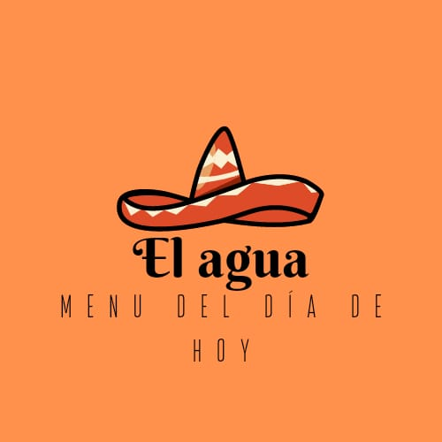
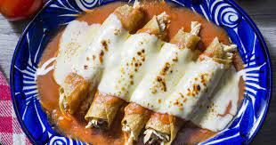
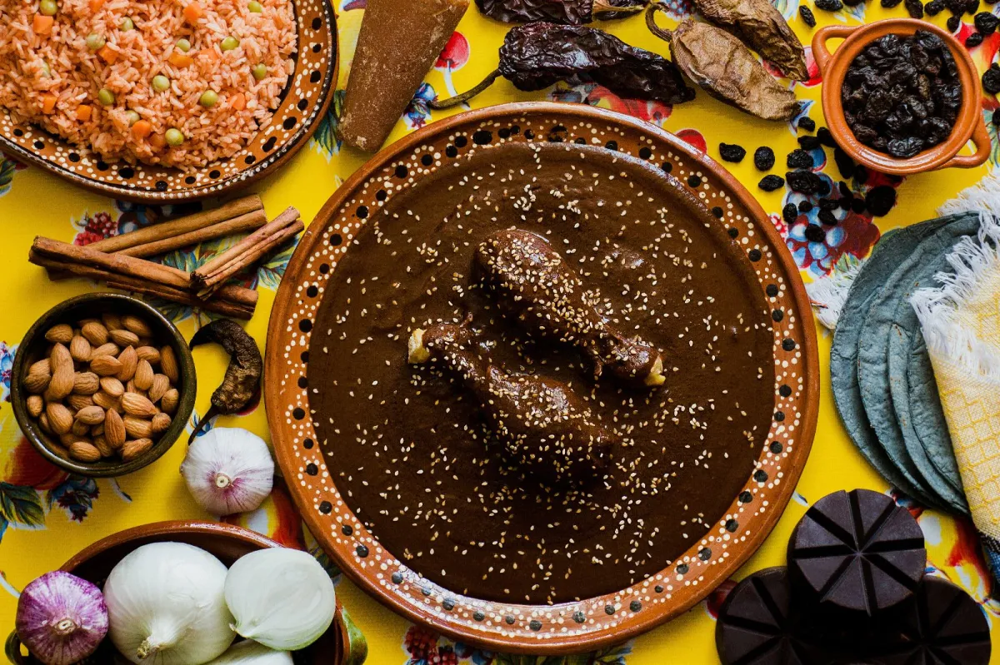
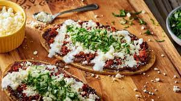
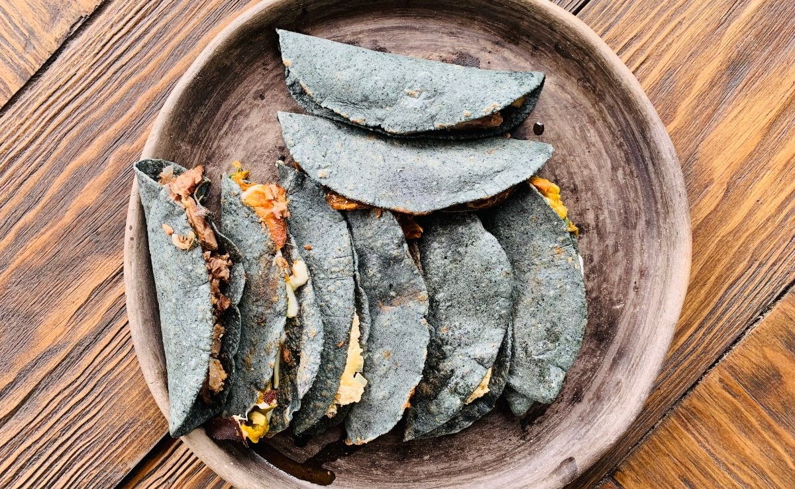
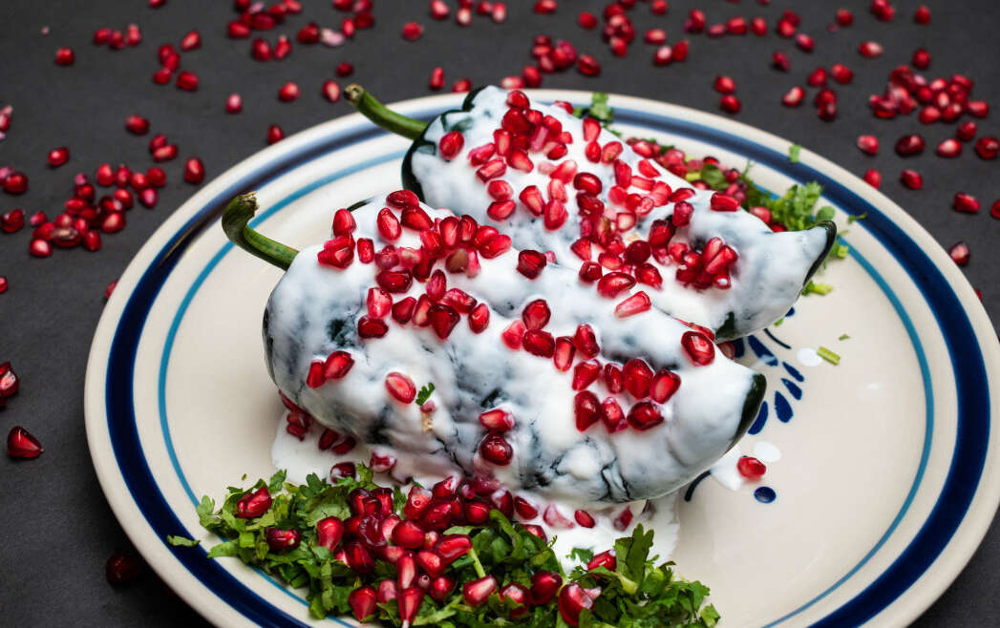
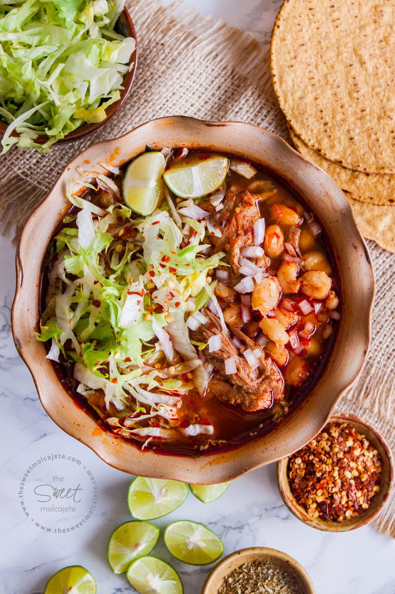

<!DOCTYPE html>
<html>
<head>
    <meta charset="utf-8">
    <title>
        RESTAURANTE
    </title>
    <link rel="stylesheet" href="style/style.css">
</head>
</html>

<body>
<header>
    <div class="logo">
         </img>
    </div>

    <div >
        <nav>
            <a href="#menu">Menu</a>
            <a href="#galeria">Galeria</a>
            <a href="#contacto">contacto</a>              
        </nav>
    </div>

</header>
<main>
    <section>
        <h1>El agua</h1>
        <p>El agua es un restaurante de platillos tradicioneles mexicanos<br>
            La gastronomía mexicana es el conjunto de platillos y técnicas culinarias de México que forman parte de las tradiciones y vida común de sus habitantes, enriquecida por las aportaciones de las distintas regiones del país, que deriva de la experiencia del México prehispánico con la cocina europea, entre otras. </p>
    </section>
    <section>
        <h2 id="menu">menu de los ricos platillos</h2>
        <div>
            </img>
        </div>
        <ul>
            <li>Tacos dorados</li>
            <li>Enchiladas</li>
            <li>Sopes</li>
            <li>Quesadillas</li>
            <li>Mole</li>
            <li>Pozole</li>
            <li>Tamales</li>
            <li>Chiles en nogada</li>
            <li>Gorditas</li>
            <li>Huaraches</li>
        </ul>
    </section>
    <section>
        <h2 id="galeria">Galeria</h2>
        <div class="gale">
            </img>
            </img>
            </img>
            </img>
            </img>
            </img>
            </img>
            </img>
            </img>
            </img>

            
         
        </div>
    </section>
</main>
<footer id="contacto">
    <div>
        </img>
    </div>
    <ul>
        <li>CONTACTANOS </li>
        <li>55-555-555-55</li>
        <li>Santa marta acatitla s/n</li>
        <li>elagua@restaurante.com</li>
    </ul>
    <ul>
        <li>REDES SOCIALES  </li>
        <li>facebook</li>
        <li>twiter</li>
        <li>instagram</li>
    </ul>
</footer>
</body>